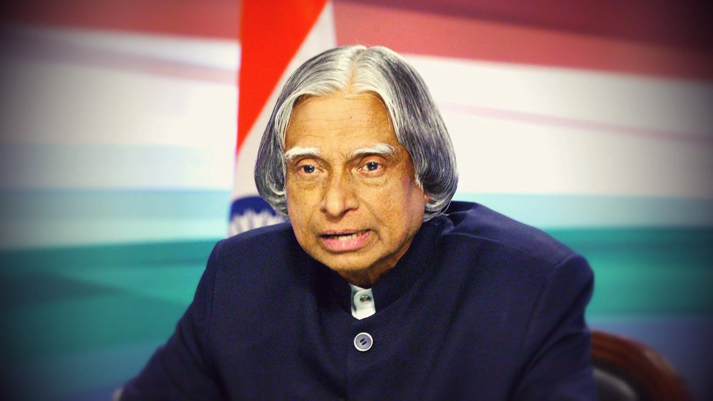

Two rules for a peaceful life: Depression in failure should never go to heart, and ego in success should never go to the brain.
Awards and Honours
- 1981: Padma Bhushan - Government of India
- 1990: Padma Vibhushan - Government of India
- 1994: Distinguished Fellow - Institute of Directors (India)
- 1995: Honorary Fellow - National Academy of Medical Sciences
- 1997: Bharat Ratna - President of India
- 1997: Indira Gandhi Award for National Integratio - Indian National Congress
- 1998: Veer Savarkar Award - Government of India
- 2000: Ramanujan Award - Alwars Research Centre, Chennai
- 2007: Honorary Doctorate of Science - University of Wolverhampton, UK
- 2007: King Charles II Medal - Royal Society, UK
- 2007: Honorary Doctorate of Science and Technology - Carnegie Mellon University
- 2008: Doctor of Science (Honoris Causa) - Aligarh Muslim University, Aligarh
- 2008: Doctor of Engineering (Honoris Causa) - Nanyang Technological University, Singapore
- 2009: International von Kármán Wings Award - California Institute of Technology, USA
- 2009: Hoover Medal - ASME Foundation, USA
- 2009: Honorary Doctorate - Oakland University
- 2010: Doctor of Engineering - University of Waterloo
- 2011: IEEE Honorary Membership - IEEE
- 2012: Doctor of Laws (Honoris Causa) - Simon Fraser University
- 2013: Von Braun Award - National Space Society
- 2014: Doctor of Science - Edinburgh University, UK
- 2014: Honorary professor - Beijing University, China